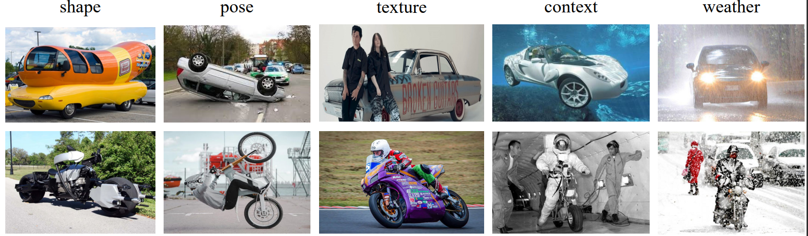

Dataset
ROBIN is a benchmark dataset for diagnosing the robustness of vision algorithms to individual nuisances in real-world images. ROBIN builds on 10 rigid categories (aeroplane, bus, car, train, boat, bicycle, motorplane, chair, dining table, sofa) from the PASCAL VOC 2012 and ImageNet datasets, and includes outof-distribution examples of the object's 3D pose, shape, texture, context and the weather conditions.
Nuisance Examples

Statistics
Placeholder
Detailed information can be found in our paper
Download
Train and Validation set can be downloaded from here.
Test set will not be available for competitors to download. Instead of submitting predictions on test set, competitors need to upload the trained model weight and inference code on Codalab for online evaluation.
Citing
If you find the dataset useful for your research, please consider citing the paper.
@article{zhao2021robin,
title={ROBIN: A Benchmark for Robustness to Individual Nuisancesin Real-World Out-of-Distribution Shifts},
author={Zhao, Bingchen and Yu, Shaozuo and Ma, Wufei and Yu, Mingxin and Mei, Shenxiao and Wang, Angtian and He, Ju and Yuille, Alan and Kortylewski, Adam},
journal={arXiv preprint arXiv:2111.14341},
year={2021}
}